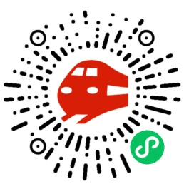

选择出发站和到达站，一键查询所有匹配班次。支持直达、大站停、站站停三种车次类型筛选，以及仅看未发车的实时过滤。
支持未来 14 天内的班次查询，自动识别平日与节假日方案。
收藏常用车次，快速查看始发到站时间，减少重复操作。
查看 9 座站点的地址、营业时间、地铁/公交换乘信息，支持一键导航和地址复制。出发之前，先了解站点周边。
内置全线票价矩阵，上海南至金山卫票价 3-10 元，一目了然。
支持深色/浅色/跟随系统三种主题，随时随地舒适体验。
安装扩展后，只需点击浏览器工具栏图标，即可在弹出面板中完成所有操作。 无需打开网页，不占用标签页，查完即走。
专为微信生态打造，不仅提供完整的列车时刻查询，还整合了站点导航、 帮助中心等丰富功能，以及上海便民生活服务。
| 功能 | 🖥️ 浏览器扩展 | 📱 微信小程序 |
|---|---|---|
| 班次查询 | ✓ 弹窗秒开 | ✓ 微信内打开 |
| 车次类型筛选 | ✓ | ✓ |
| 14 天预排期 | ✓ | ✓ |
| 站点详情 | ✓ | ✓ 含地图导航 |
| 票价查询 | ✓ | ✓ |
| 班次收藏 | ✓ | ✓ 滑动删除 |
| 帮助中心 | ✓ | ✓ 15 条 FAQ |
| 深色模式 | ✓ | ✓ |
| 上海便民服务 | — | ✓ |
电脑前查看班次，点击扩展图标即查即走，工作不中断
推荐扩展手机上打开小程序，快速查看下一班车次，从容出行
推荐小程序提前查班次、算时间，配合站点导航规划最佳路线
双端均可深色模式护眼，确认明日首班车，安心入睡
双端均可微信扫码即用，无需安装
